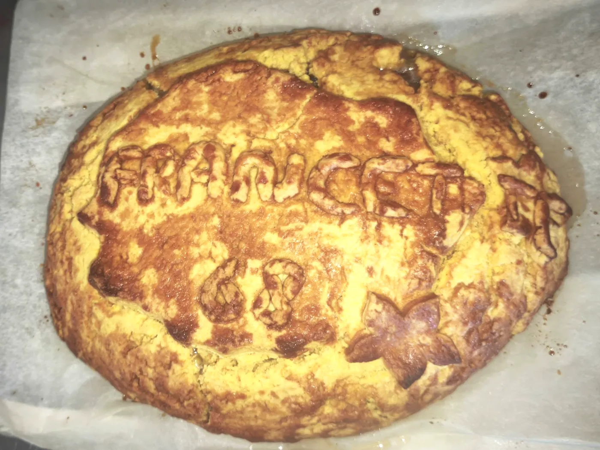
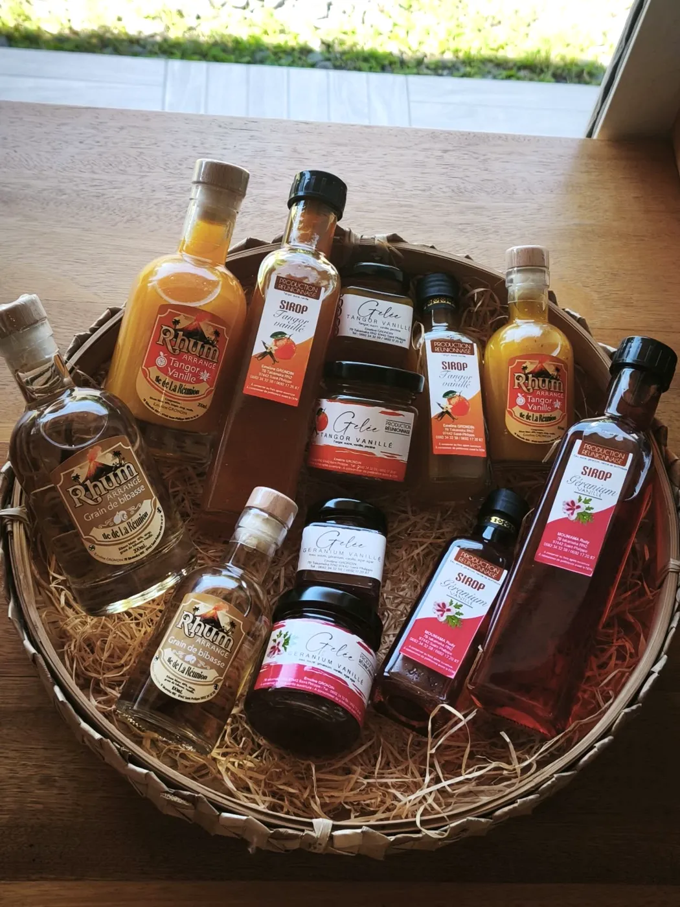
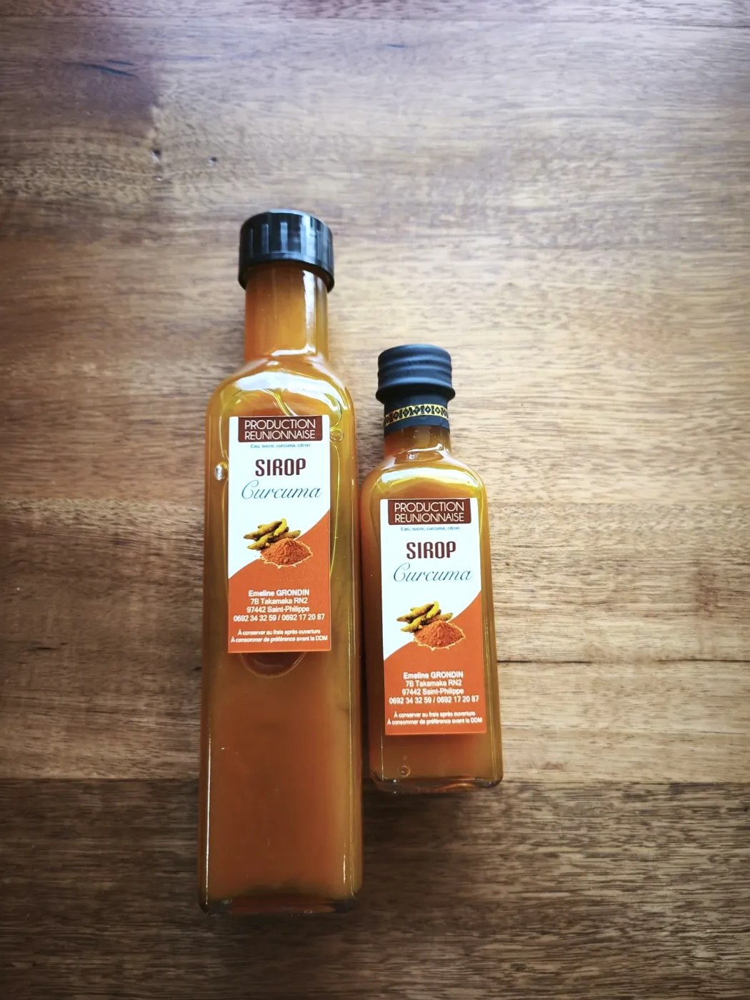
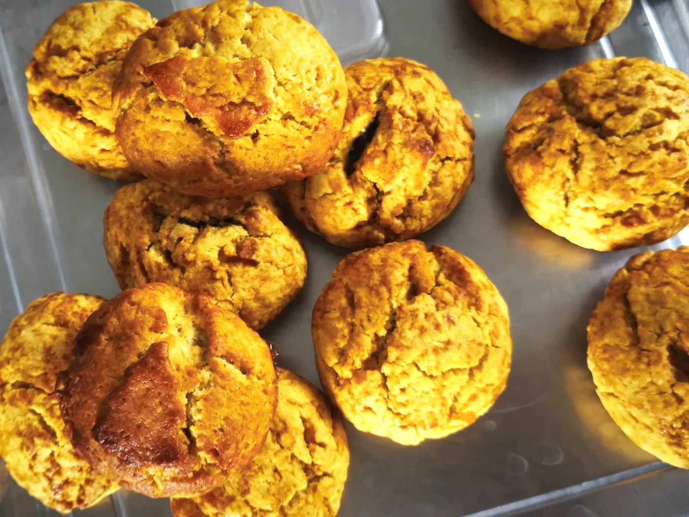
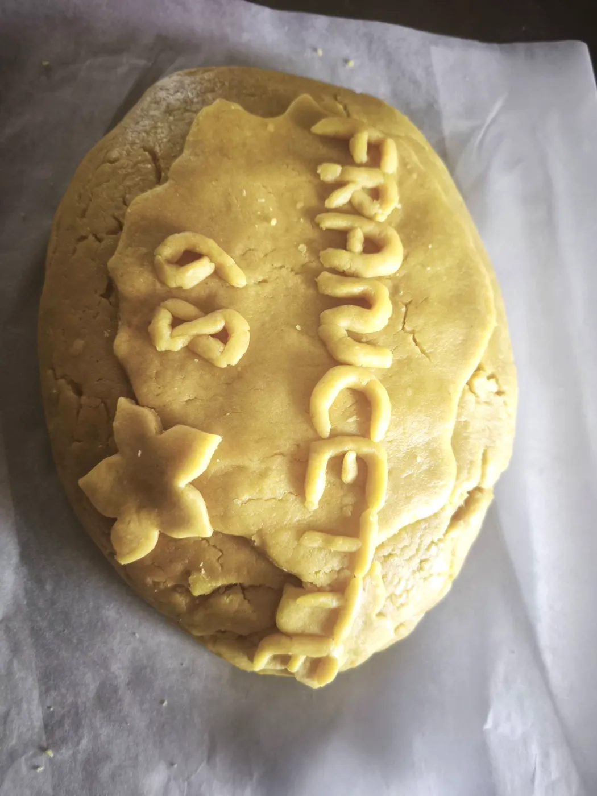

Sirops, gelées, confitures et pâtés créoles faits maison, avec les saveurs du Sud sauvage.
Au bord de la route nationale à Takamaka, la boutique accueille les gourmands avec les productions de la semaine. Le réapprovisionnement se fait chaque lundi, mardi et mercredi, et le sirop de curcuma vient d’arriver en boutique.

Vanille, curcuma et autres parfums péi, en bouteille.
Gingembre, letchis, ananas passion, vanille, tomate : selon la saison.
Sucrés, au saindoux ou pur beurre, avec ou sans garniture, sur commande.



7 RN2 Takamaka · 97442 Saint-Philippe
Les nouveautés de la semaine sur notre page Facebook